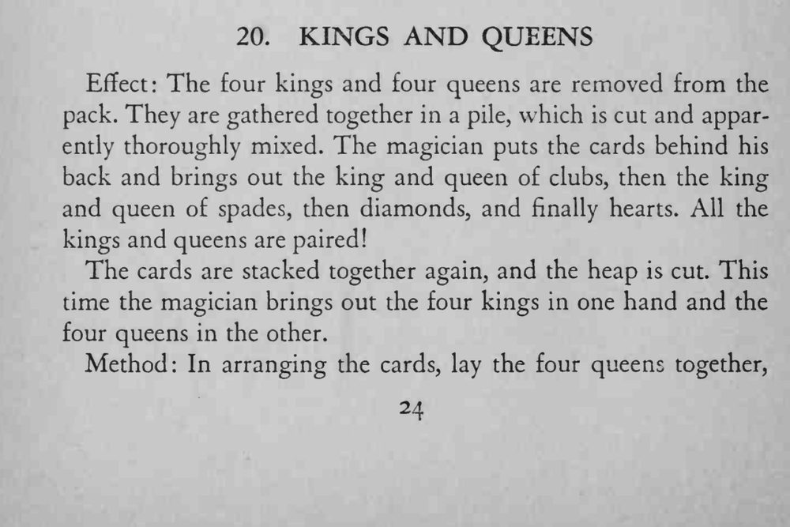
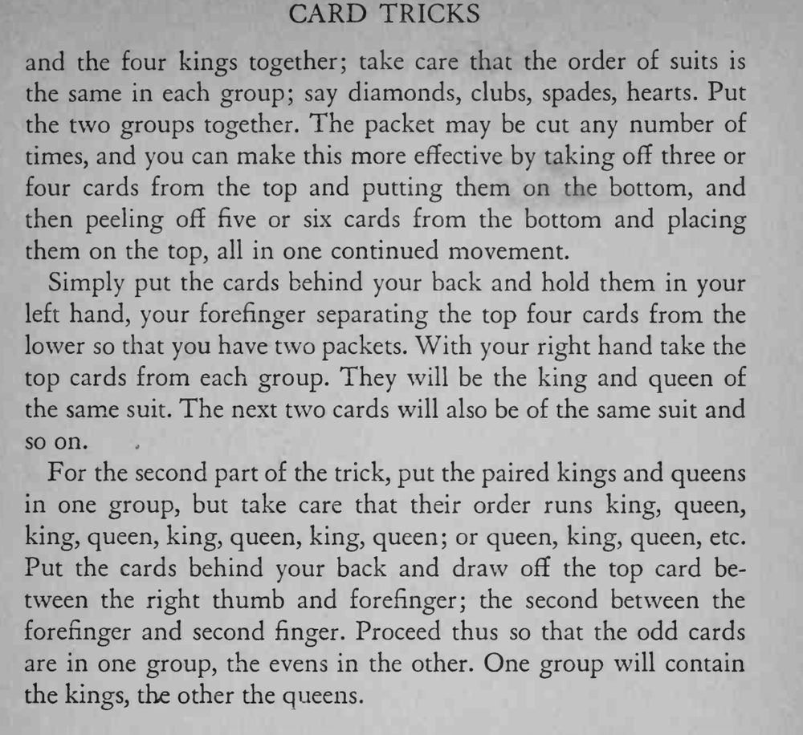

四张 K 和四张 Q 混成一堆、反复切开，魔术师把手放到背后，却能一对一对地拿出同花色的 K 和 Q，最后还一手拿出四张 K、另一手四张 Q。
两组的排列顺序必须完全一致，配对时才不会出错。


Effect: The four kings and four queens are removed from the pack. They are gathered together in a pile, which is cut and apparently thoroughly mixed. The magician puts the cards behind his back and brings out the king and queen of clubs, then the king and queen of spades, then diamonds, and finally hearts. All the kings and queens are paired! The cards are stacked together again, and the heap is cut. This time the magician brings out the four kings in one hand and the four queens in the other. Method: In arranging the cards, lay the four queens together, and the four kings together; take care that the order of suits is the same in each group; say diamonds, clubs, spades, hearts. Put the two groups together. The packet may be cut any number of times, and you can make this more effective by taking off three or four cards from the top and putting them on the bottom, and then peeling off five or six cards from the bottom and placing them on the top, all in one continued movement. Simply put the cards behind your back and hold them in your left hand, your forefinger separating the top four cards from the lower so that you have two packets. With your right hand take the top cards from each group. They will be the king and queen of the same suit. The next two cards will also be of the same suit and so on. For the second part of the trick, put the paired kings and queens in one group, but take care that their order runs king, queen, king, queen, king, queen, king, queen; or queen, king, queen, etc. Put the cards behind your back and draw off the top card between the right thumb and forefinger; the second between the forefinger and second finger. Proceed thus so that the odd cards are in one group, the evens in the other. One group will contain the kings, the other the queens.